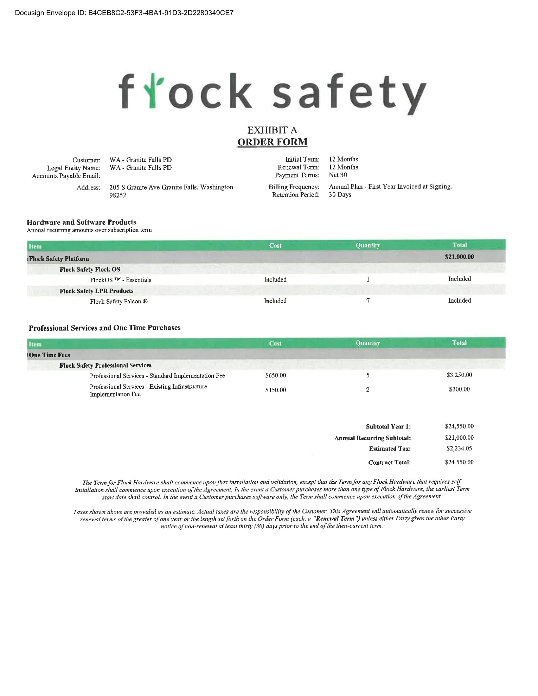
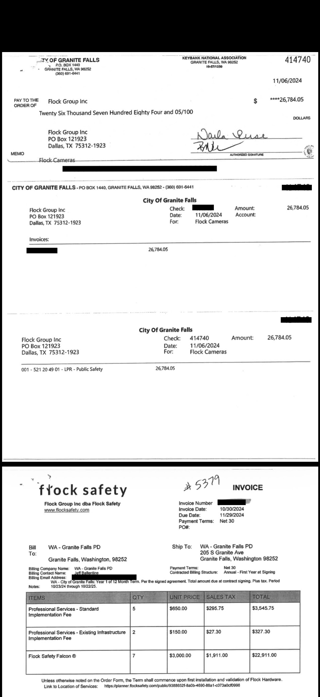
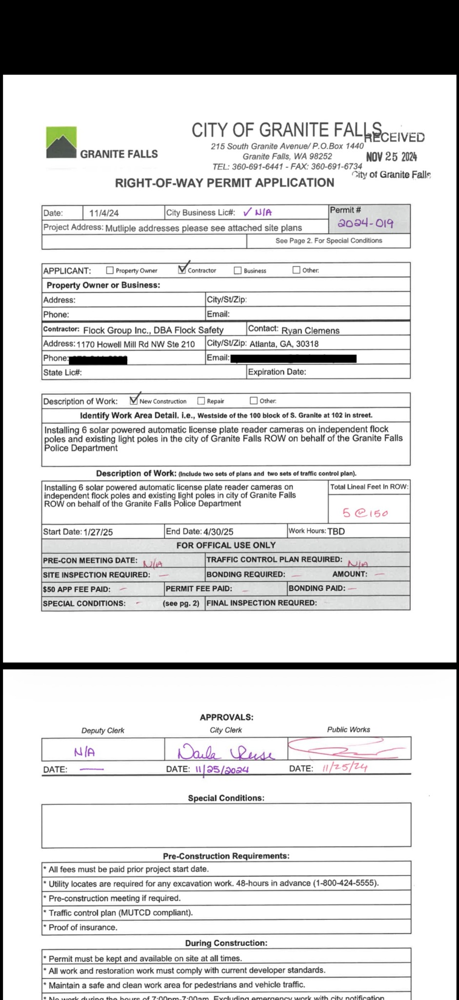
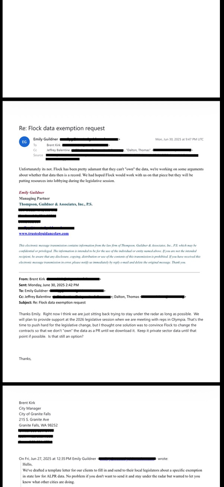
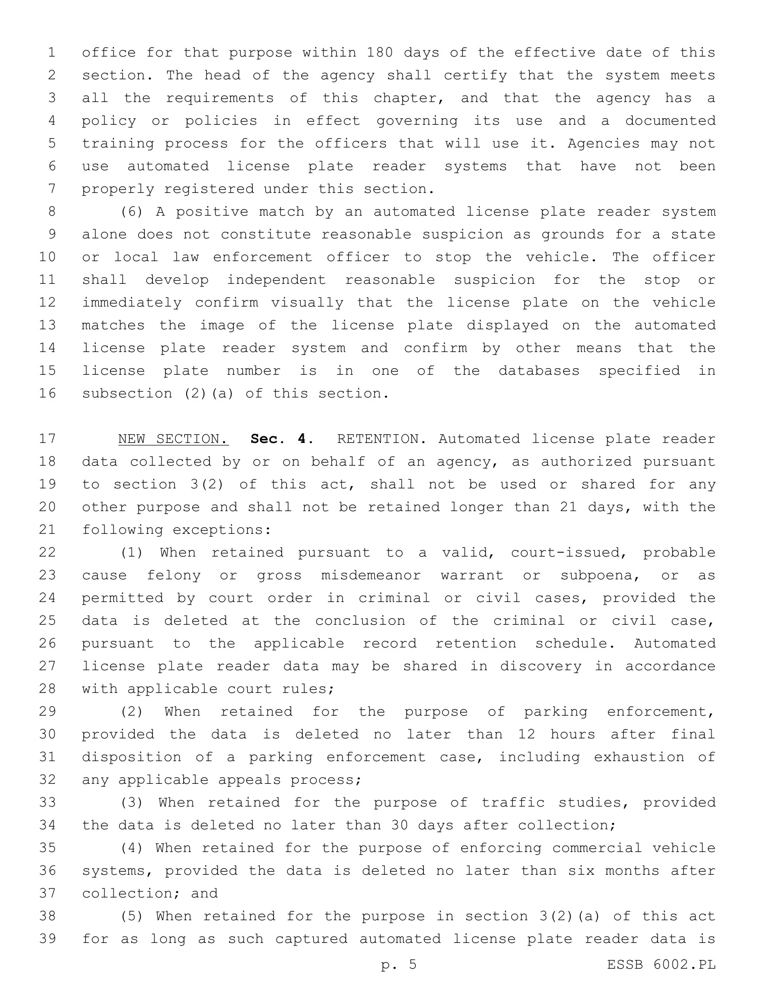

Records already obtained.
This page lists material already received and used in the public record shown elsewhere on the site. It does not publish planned or unsubmitted requests.
What is in the record.
The City’s production included the executed Flock agreement, invoice and payment material, deployment and permitting records, internal emails, Council material, renewal advocacy and correspondence about public-records issues.

Executed MSA + Order Form
Pricing, term, product descriptions, retention language and FlockOS feature descriptions.

Invoice + payment
Seven-camera invoice and City payment records.

ROW Permit 2024-019
Permit application, overview map and camera-location drawings.

City / police / counsel / Flock
Internal discussions about public records, legal strategy, Flock Legal, renewal, camera maintenance and related policy questions.

ESSB 6002 (2026)
Enacted Washington ALPR law covering authorized uses, restricted locations, retention, sharing, registration, reporting and audit trails.